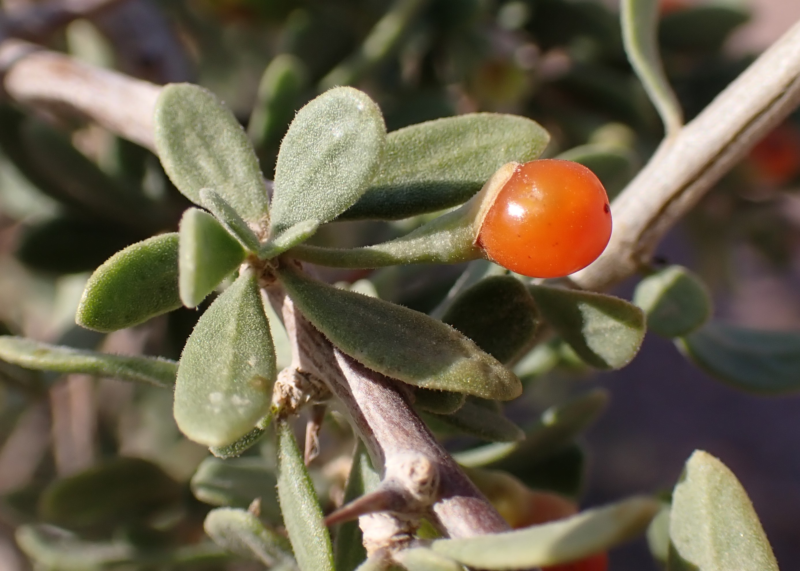

Un chasseur qui connaît le terrain ne parcourt pas la nature à l’aveugle en attendant le passage fortuit d’un oiseau. Il observe les buissons, sent le sol et devine souvent où le gibier peut se poser avant de le voir. Dans les déserts et les vallées d’Arabie, peu d’arbustes parlent aussi clairement du lieu que l’awsaj (Lycium shawii).
On le trouve au creux d’un shuʿayb, un petit vallon : emmêlé et couvert d’épines, il forme une petite forteresse contre la sécheresse estivale en attendant les premières pluies.
Une halte et une réserve d’énergie pour les migrateurs
Un awsaj vert et vivant sur un terrain dénudé constitue un point de halte précieux. Un migrateur fatigué — petite fauvette, pie-grièche ou tourterelle ayant parcouru des centaines de kilomètres — y trouve ce qui manque à bien d’autres buissons :
Un abri : les épines entrelacées protègent les petits oiseaux de nombreux rapaces, dont les faucons pèlerins, et compliquent l’accès des prédateurs terrestres, comme les renards, au centre du buisson. Les petits oiseaux peuvent s’y reposer et y passer la nuit.
Des fruits énergétiques (« baies de loup ») : les petites baies rouges et rondes, appelées localement ʿinab al-dhiʾb ou baies d’awsaj, apportent de l’humidité et des sucres naturels à un oiseau épuisé avant l’étape suivante. C’est pourquoi de nombreux chasseurs inspectent d’abord ces buissons à l’aube, à la recherche d’un mouvement de plumes à l’intérieur.

Dans la pharmacopée populaire du terrain
Les anciens ne passaient pas à côté de l’awsaj sans le remarquer : il appartient depuis longtemps à la médecine populaire d’Arabie. Les usages rapportés ci-dessous relèvent du patrimoine oral du terrain ; ils ne sont pas des conseils médicaux modernes et ne remplacent ni l’eau propre, ni un pansement adapté, ni les soins nécessaires :
Coupures et égratignures : selon la tradition orale, une personne écorchée par une pierre ou une épine, craignant une contamination, prenait une poignée de jeunes feuilles d’awsaj, les écrasait entre deux pierres propres et posait leur jus directement sur la plaie comme pansement. Les substances astringentes des feuilles, raconte-t-on, arrêteraient un léger saignement et agiraient comme désinfectant naturel.
Sable dans les yeux : on raconte que, lors de brusques tempêtes de sable, des Bédouins faisaient bouillir les feuilles dans un peu d’eau propre, laissaient le liquide refroidir complètement, puis l’utilisaient pour rincer les yeux irrités et enlever les grains de sable.
Maux de ventre au camp : d’autres récits populaires disent que faire bouillir quelques feuilles d’awsaj et boire lentement cette infusion amère soulageait les crampes soudaines ou les troubles apparus après une eau mal supportée.
La nature n’est pas un ennemi à défier, mais un livre ouvert. Celui qui apprend la langue de ses arbustes risque moins de s’égarer.